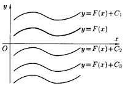

Основна властивість первісної
Головна
Якщо функція F(x) є первісною для функції f(x) на даному проміжку, а C – довільна стала, то F(x)+C є також первісною для функції f(x), при цьому будь-яка первісна для функції f(x) на даному проміжку може бути записана у вигляді F(x)+C , де С – довільна стала.

Графіки будь-яких первісних одержуються один з одного паралельним перенесенням уздовж осі ОУ.
< Назад
Вперед >